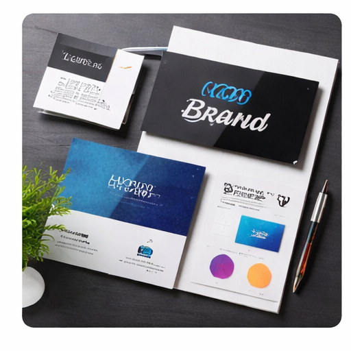

Linux en Windows filesharing
In dit project heb ik gewerkt rond het delen van bestanden tussen Linux en Windows systemen.

Over dit project
Ik heb onderzocht hoe Linux en Windows met elkaar kunnen samenwerken binnen een netwerk. Hierbij lag de focus op gedeelde mappen, rechten en correcte netwerkconfiguratie.
Tijdens dit labo heb ik geleerd hoe belangrijk permissies, gebruikersrechten en correcte padnamen zijn bij filesharing tussen verschillende besturingssystemen.
Belangrijkste onderdelen
- Configureren van gedeelde mappen tussen Linux en Windows.
- Werken met rechten en gebruikersaccounts.
- Controleren of bestanden correct bereikbaar zijn via het netwerk.
- Problemen oplossen rond permissies, paden en netwerkverbindingen.
Gebruikte tools
Linux, Windows, SMB, NFS, netwerkshares en gebruikersrechten.
Doel van het project
Het doel was om bestanden correct te delen tussen Linux en Windows en te begrijpen hoe rechten en netwerkshares werken in een gemengde IT-omgeving.
Wat heb ik geleerd?
- Ik heb geleerd hoe Linux en Windows bestanden kunnen delen binnen hetzelfde netwerk.
- Ik heb geleerd hoe belangrijk correcte rechten zijn bij filesharing.
- Ik heb geleerd hoe gebruikers en groepen invloed hebben op toegang tot mappen.
- Ik heb geleerd hoe ik verbindingsproblemen en permissiefouten kan controleren.
Projectoverzicht
| Onderdeel | Beschrijving |
|---|---|
| Type project | Filesharing tussen besturingssystemen |
| Systemen | Linux en Windows |
| Focus | Netwerkshares, rechten en gebruikersbeheer |
| Resultaat | Bestanden delen tussen Linux en Windows binnen een netwerk |